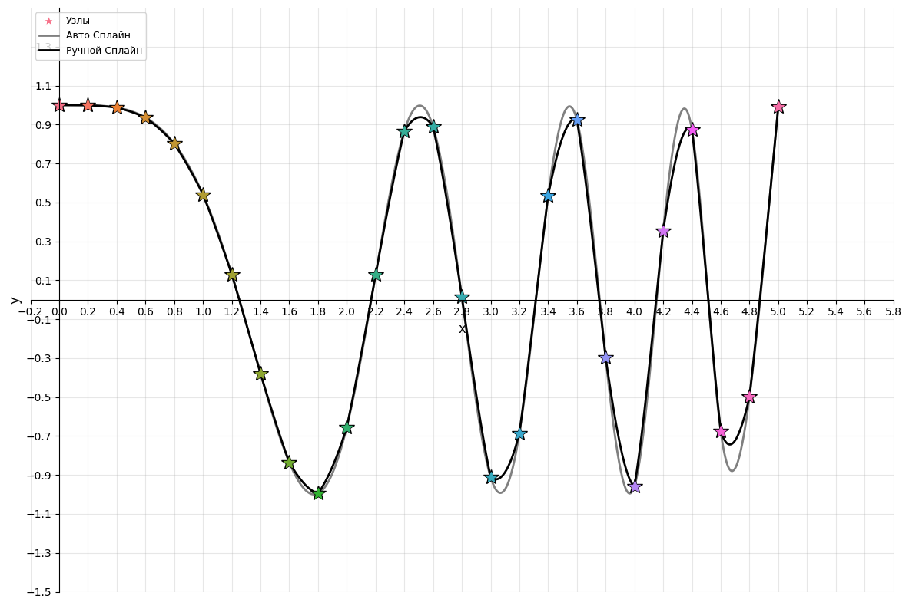

Imagine that you have several points and need to draw a smooth curve through them. You could connect them with straight lines, but that gives you a jagged polyline: rough, ugly, with the derivative jumping at every joint. You could use one enormous polynomial passing through every point, but polynomial interpolation has a habit of exploding near the edges — hello, Runge's phenomenon. Or you could do it properly. This is where splines come in.
What Is a Spline?
A spline is a piecewise-defined function. Each interval between control points has its own formula, usually a polynomial, and the pieces are joined neatly at their boundaries.
A few terms that will come up:
- Control (support) points — points at which the function value is known. The spline segments are built from them.
- Control polygon — a polyline connecting the control points. It is effectively a linear spline, the simplest possible case.
- Spline degree — the highest degree of the polynomials used.
- Smoothness — the highest order of continuous derivative. The higher it is, the smoother the joints.
- Defect — the difference between degree and smoothness. A polyline is a degree-one spline with defect one.
We are interested in a cubic spline: degree 3 and smoothness 2. In other words, every interval contains a cubic polynomial, while the values, first derivatives, and second derivatives match at the joints.
The Problem
We need to construct a cubic spline for \(\cos(x^2)\) over \([0, 5]\), using two grids: one with \(n = 5\) nodes and another with \(n = 25\). Then we compare how far the spline misses the true function.
How It Works
On each interval \([x_{k-1},\, x_k]\), the spline has the form:
$$S(x) = a_k + b_k(x - x_{k-1}) + c_k(x - x_{k-1})^2 + d_k(x - x_{k-1})^3$$The \(a\) coefficients are simply the function values at the nodes. Finding \(b\), \(c\), and \(d\) requires solving a system of equations. For a uniform grid, where the step \(h\) is constant, it looks like this:
$$c_{k-1} \cdot h + 2c_k \cdot (h + h) + c_{k+1} \cdot h = 3\left(\frac{y_{k+1} - y_k}{h} - \frac{y_k - y_{k-1}}{h}\right)$$This produces a tridiagonal matrix — a near-perfect candidate for the Thomas algorithm, also known as the tridiagonal matrix algorithm.
The Thomas Algorithm
Tridiagonal systems can be solved using ordinary Gaussian elimination, but the Thomas algorithm does it faster: \(O(n)\) rather than \(O(n^3)\). First comes a forward sweep, where auxiliary coefficients \(P\) and \(Q\) are calculated. Then the backward sweep reconstructs \(c\), one value at a time, from last to first.
# Forward sweep
P[0] = −h / (4h)
Q[0] = r[0] / (4h)
for i in range(1, n−1):
D = h·P[i−1] + 4h
P[i] = −h / D
Q[i] = (r[i] − h·Q[i−1]) / D
# Backward sweep
c[n−1] = Q[n−1]
for i in range(n−2, −1, −1):
c[i] = P[i]·c[i+1] + Q[i]
To make sure the algorithm works correctly, you can compare its output with numpy.linalg.solve. The results should match.
Building the Grid and Doing the Maths
import math a, b = 0, 5 # n = 5 n1 = 5 h1 = (b - a) / n1 grid_1_x = [i for i in range(n1 + 1)] grid_1_y = [math.cos((i * h1)**2) for i in range(n1 + 1)] # n = 25 n2 = 25 h2 = (b - a) / n2 grid_2_x = [i * h2 for i in range(n2 + 1)] grid_2_y = [math.cos((i * h2)**2) for i in range(n2 + 1)]
Once the coefficients are known, the spline can be evaluated at any point: choose the appropriate interval and substitute the point into the formula with a, b, c, and d.
Accuracy: n = 5 vs n = 25
To estimate the accuracy, we evaluate the spline at the midpoint of each interval and compare it with the true function.
| Parameter | \(n = 5\) | \(n = 25\) |
|---|---|---|
| Grid step \(h\) | 1.0 | 0.2 |
| Number of intervals | 5 | 25 |
| Error | noticeable — the function oscillates rapidly | orders of magnitude smaller |
The function \(\cos(x^2)\) is a tricky one: the farther it moves from zero, the faster it oscillates. With \(n = 5\) and \(h = 1\), the spline cannot keep up with those oscillations. At \(n = 25\), the grid is much denser and the accuracy improves dramatically. The graph makes this clear: at \(n = 25\), the right-hand side almost perfectly matches the reference spline. The grey line (library) and black line (manual) differ noticeably only where the function changes especially quickly.

Plotting It in Code
For visualisation, the spline is assembled as a piecewise function using sympy.Piecewise, then “compiled” into a fast NumPy-compatible function with lambdify. A reference spline is also built with scipy.interpolate.CubicSpline, making it easy to see how closely the hand-written implementation matches the library version.
import sympy as sm
x = sm.Symbol('x')
S = sm.Piecewise(*[
(a_k + b_k*(x - x_prev) + c_k*(x - x_prev)**2 + d_k*(x - x_prev)**3,
(x >= x_prev) & (x <= x_next))
for k in range(1, n+1)
], (sm.nan, True))
S_func = sm.lambdify(x, S, modules=['numpy'])
In Short
Cubic splines let us draw smooth curves through a set of points without the explosive error growth of high-degree polynomial interpolation. The key point is simple: the denser the grid, the more accurate the result. A small \(n\) is enough for well-behaved functions; rapidly changing ones need more nodes. Meanwhile, the Thomas algorithm solves the system in linear time, keeping the entire approach practical even for large grids.